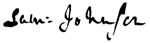

The Complete Works of
SAMUEL JOHNSON
(1709-1784)
Contents
A COMPLEAT VINDICATION OF THE LICENSERS OF THE STAGE
THE PLAN OF A DICTIONARY OF THE ENGLISH LANGUAGE
THOUGHTS ON THE LATE TRANSACTIONS RESPECTING FALKLAND’S ISLANDS
A JOURNEY TO THE WESTERN ISLANDS OF SCOTLAND
A CONVERSATION BETWEEN HIS MOST SACRED MAJESTY GEORGE III AND SAMUEL JOHNSON LID
MISCELLANEOUS PAMPHLETS, REVIEWS AND ESSAYS
THE PRINCE OF ABISSINIA: A TALE
PREFACE TO A DICTIONARY OF THE ENGLISH LANGUAGE
AN ACCOUNT OF THE LIFE OF MR RICHARD SAVAGE
THE LIVES OF THE MOST EMINENT ENGLISH POETS
MISCELLANEOUS OBSERVATIONS ON THE TRAGEDY OF MACBETH
PROPOSALS FOR PRINTING THE DRAMATICK WORKS OF WILLIAM SHAKESPEARE
PREFACE TO THE PLAYS OF WILLIAM SHAKESPEARE
GENERAL OBSERVATIONS ON THE PLAYS OF SHAKESPEARE
LIST OF POEMS IN CHRONOLOGICAL ORDER
LIST OF POEMS IN ALPHABETICAL ORDER
DR. JOHNSON AND HIS CIRCLE by John Bailey
SAMUEL JOHNSON by Richard Claverhouse Jebb
SAMUEL JOHNSON by Leslie Stephen
STUDIES OF A BIOGRAPHER by Leslie Stephen
A POETICAL REVIEW OF THE LITERARY AND MORAL CHARACTER OF JOHNSON by John Courtenay
SAMUEL JOHNSON by Nathaniel Hawthorne
SAMUEL JOHNSON by C. E. Vaughan
ANECDOTES OF THE LATE SAMUEL JOHNSON, LL.D. by Hester Lynch Piozzi
THE REAL DR. JOHNSON by G. K. Chesterton
A REMINISCENCE OF DR. SAMUEL JOHNSON by H. P. Lovecraft
THE LIFE OF SAMUEL JOHNSON LL.D. by James Boswell
BOSWELL’S LIFE OF JOHNSON (ABRIDGED) by Charles Grosvenor Osgood
MACAULAY’S LIFE OF SAMUEL JOHNSON by Baron Thomas Babington Macaulay
AN ESSAY ON THE LIFE AND GENIUS OF SAMUEL JOHNSON by Arthur Murphy

© Delphi Classics 2013
Version 1